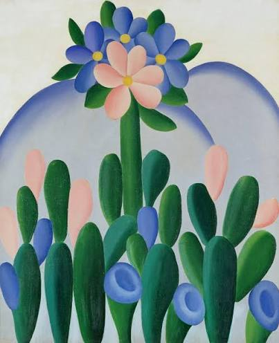

Tarsila do Amaral

Um pouco sobre Tarsila
Tarsila do Amaral nasceu em 1 de setembro de 1886, no Município de Capivari, interior do Estado de São Paulo. Filha do fazendeiro José Estanislau do Amaral e de Lydia Dias de Aguiar do Amaral, passou a infância nas fazendas de seu pai. Estudou em São Paulo, no Colégio Sion e depois em Barcelona, na Espanha, onde fez seu primeiro quadro, ‘Sagrado Coração de Jesus’, em 1904. Quando voltou, casou-se com André Teixeira Pinto, com quem teve a única filha, Dulce.

Separaram-se alguns anos depois e então iniciou seus estudos em arte. Começou com escultura, com Zadig, passando a ter aulas de desenho e pintura no ateliê de Pedro Alexandrino em 1918, onde conheceu a pintora Anita Malfatti. Em 1920, foi estudar em Paris, na Académie Julien e com Émile Renard. Ficou lá até junho de 1922 e soube da Semana de Arte Moderna (que aconteceu em fevereiro de 1922) através das cartas da amiga Anita Malfatti. Quando voltou ao Brasil, Anita a introduziu no grupo modernista e Tarsila começou a namorar o escritor Oswald de Andrade. Formaram o grupo dos cinco: Tarsila, Anita, Oswald, e os escritores Mário de Andrade e Menotti Del Picchia. Agitaram culturalmente São Paulo com reuniões, festas, conferências. Tarsila disse que entrou em contato com a arte moderna em São Paulo, pois antes ela só havia feito estudos acadêmicos. Em dezembro de 22, ela voltou a Paris e em seguida Oswald foi encontrá-la.
Tarsila no Moviento Modernista
Com o intuito de se afastar dos temas abordados na arte europeia, os artistas modernistas se empenharam em criar uma estética tipicamente brasileira. Utilizaram o conceito metafórico de deglutição acerca do ato de comer a cultura estrangeira e regurgitar a “nova” cultura. A antropofagia foi inspirada no quadro Abaporu, de Tarsila, que do Tupi, significa “antropófago” (homem que se alimenta de carne humana). Sobre a figura de Abaporu, Tarsila acrescenta: Essa figura primitiva e monstruosa nasceu de um sonho. Segundo a descrição de Tarsila sobre a obra: Há uma figura solitária monstruosa, pés imensos, sentada sobre uma planície verde, o braço dobrado repousando num joelho, a mão sustentando o leve peso da minúscula cabeça. Em frente, um cactus explodindo em uma enorme flor.